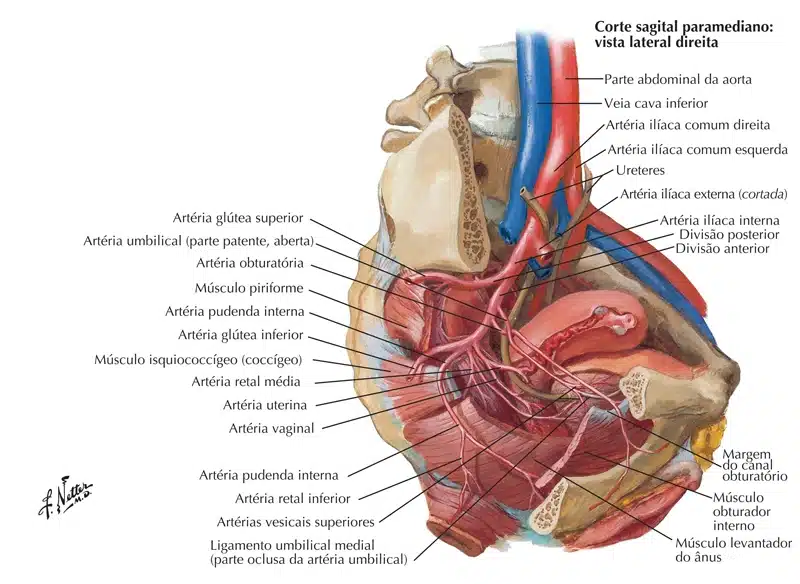
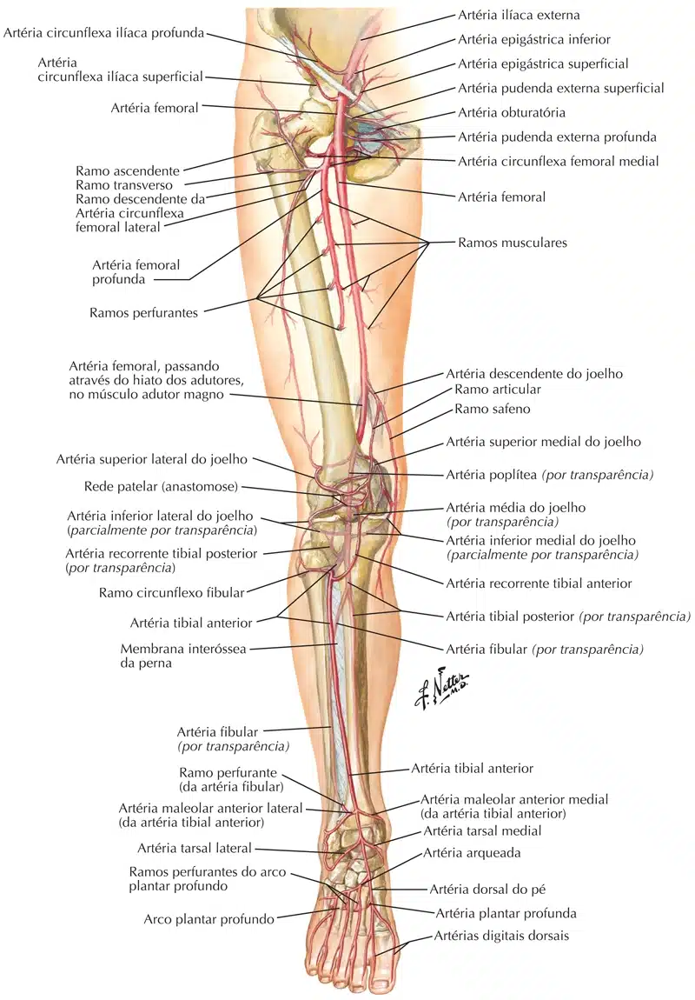
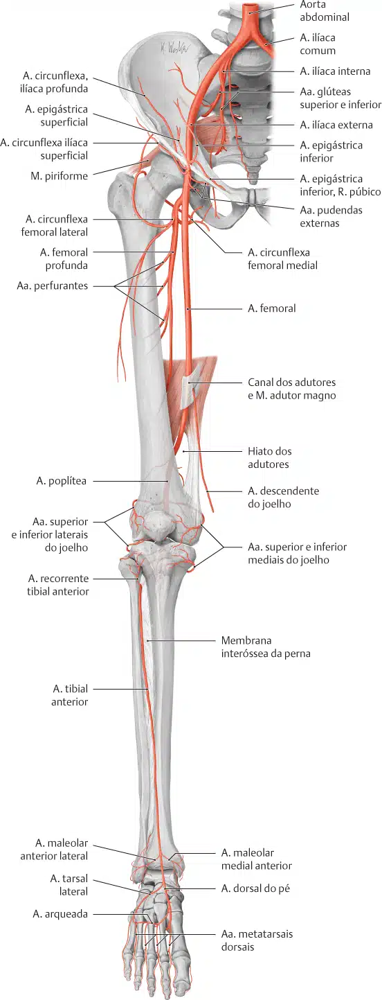
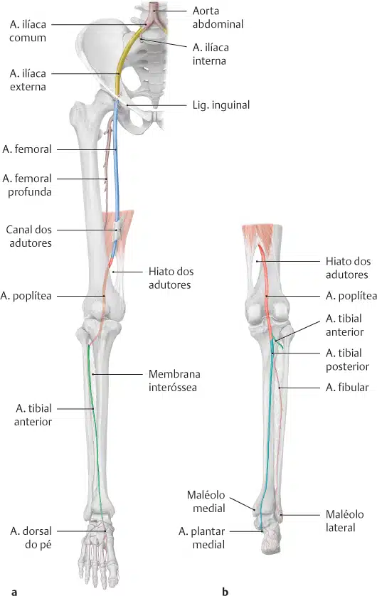
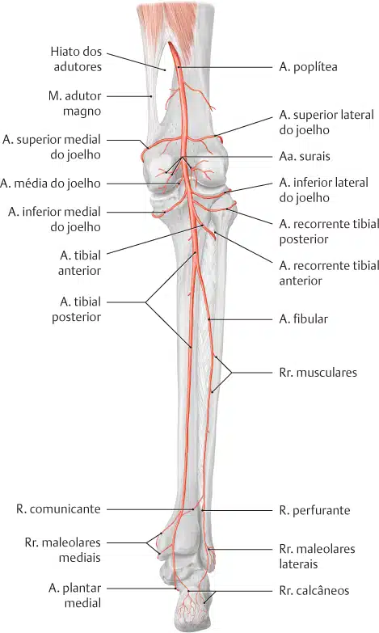
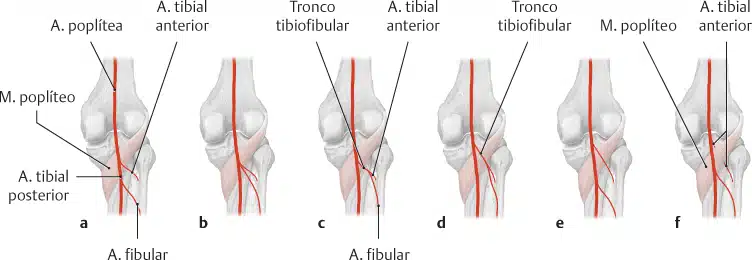
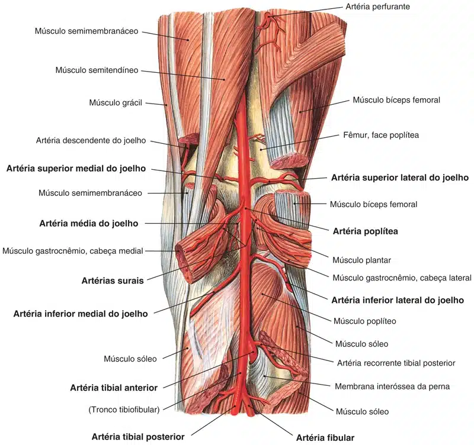
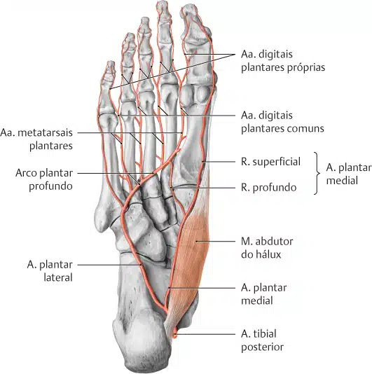

As principais artérias dos membros inferiores incluem:
Artéria ilíaca externa;
Artéria femoral;
Artéria poplítea;
Artéria tibial anterior;
Artéria tibial posterior;
Artéria fibular.
Além da artéria femoral, existem outros vasos que suprem o membro inferior.
A artéria obturadora origina-se da artéria ilíaca interna na região pélvica. Desce pelo canal obturador para entrar na coxa medial, bifurcando-se em dois ramos:
A região glútea é amplamente suprida pelas artérias glúteas superior e inferior.
Essas artérias também se originam da artéria ilíaca interna, entrando na região glútea através do incisura isquiática maior.
A artéria glútea superior deixa o forame acima do músculo piriforme, a inferior abaixo do músculo.
Além dos músculos glúteos, a artéria glútea inferior também contribui para a vascularização da parte posterior da coxa.


A artéria femoral é uma continuação da artéria ilíaca externa (ramo terminal da aorta abdominal).
A a. ilíaca externa torna-se a artéria femoral quando passa sob o ligamento inguinal e entra no trígono femoral.
No trígono femoral, a artéria femoral profunda origina-se da face póstero-lateral da artéria femoral.
Ela viaja posteriormente e distalmente, emitindo três ramos principais:

Depois de sair do trígono femoral, a artéria femoral continua na face anterior da coxa, através de um túnel conhecido como canal adutor.
Durante sua descida, a artéria supre os músculos anteriores da coxa.
O canal adutor termina em uma abertura no adutor magno, chamada de hiato dos adutores.
A artéria femoral passa por essa abertura e entra no compartimento posterior da coxa, proximal ao joelho.
Agora esta artéria será chamada de artéria poplítea .

A artéria poplítea desce pela parte posterior da coxa, dando origem a ramos que suprem a articulação do joelho.
Move-se pela fossa poplítea, saindo entre os músculos gastrocnêmio e poplíteo.
Na borda inferior do poplíteo, a artéria poplítea termina dividindo-se na artéria tibial anterior e no tronco tibiofibular (termo não oficial). Podemos considerar que a a. tibial posterior surge a partir da a. poplítea.
Por sua vez, o tronco tibiofibular se bifurca nas artérias tibial posterior e fibular:
A outra divisão da artéria poplítea, a artéria tibial anterior, passa anteriormente entre a tíbia e a fíbula, através de uma abertura na membrana interóssea.
Em seguida, move-se inferiormente para baixo da perna.
Desce por toda a extensão da perna e entra no pé, onde se torna a artéria dorsal do pé.



O suprimento arterial para o pé é fornecido por duas artérias:
A artéria dorsal do pé começa quando a artéria tibial anterior entra no pé.
Ele passa sobre o aspecto dorsal (posterior) dos ossos do tarso, então se move inferiormente, em direção à sola do pé.
Em seguida, anastomosa-se com a artéria plantar lateral para formar o arco plantar profundo.
A artéria dorsal do pé supre os ossos do tarso e a face dorsal dos metatarsos.
Através do arco plantar profundo, também contribui para o suprimento dos dedos.
A artéria tibial posterior entra na sola do pé através do túnel do tarso.
Em seguida, divide-se nas artérias plantares lateral e medial.
Essas artérias suprem o lado plantar do pé e contribuem para o suprimento dos dedos através do arco plantar profundo.
